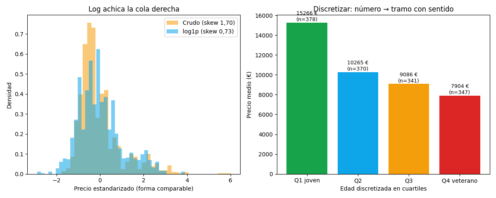

Unidad 2 · Exploración de datos · Lección 0046
Transformaciones: log para la cola larga, tramos para la edad
Win de hoy: el precio tiene cola derecha (skew 1,70) y log1p la doma (skew 0,73);
la edad continua se vuelve 4 tramos que valen 15.266 / 10.265 / 9.086 / 7.904 € —
dos transformaciones de feature engineering con efecto medible.
1 · El mapa: 5 transformaciones, 2 nuevas hoy
Transformar es reexpresar una variable para que los algoritmos la aprovechen mejor. La familia completa de clase:
| Transformación | Idea | Dónde se estudia |
|---|---|---|
| Escalado | Igualar rangos (KM no aplasta a Doors) | 0028, 0033 |
| Llenado de faltantes | Rellenar huecos con criterio | U4 (0015–0018) |
| Agrupamiento | Crear grupos como variable (clusters) | U7 (0028–0032) |
| Log / skew | Domar colas largas | Hoy §2 |
| Discretización | Número → tramo con sentido | Hoy §3 |
2 · Log: achicar la cola que estira todo
Price tiene skew 1,70:
la mayoría vale 5–12k € pero unos pocos premium estiran la media y aplastan los gráficos. El logaritmo comprime los grandes
(log(30.000) ≈ 10,3 vs log(5.000) ≈ 8,5: la brecha se achica) y deja skew 0,73. Se usa
log1p(x) = log(1+x) para no romper con ceros.

Cuándo log: target o feature con cola derecha fuerte + modelos que suponen simetría (OLS, k-means, NB). Cuándo NO: si necesitás coeficientes en euros directos («−0,0456 €/km» se entiende; «−0,000004 log-€/km» no cierra acuerdos). Ojo KM: su log queda skew −6,1 (sobrecorrección por los KM=1): transformar también se valida, no se aplica a ciegas.
Regenerar la figura (mismo resultado versionado en assets/img/toyota/):
python scripts/make_figures.py --only transformaciones-log-discretizar3 · Discretización: cortar donde hay patrón
Discretizar
es cortar un continuo en tramos: qcut(edad, 4) da cuartiles con ~350 autos cada uno, y el precio medio
cuenta la historia sin fórmulas (15.266 → 10.265 → 9.086 → 7.904 €). ¿Cuándo conviene? Cuando la relación no es lineal
(el salto Q1→Q2 es 5.000 €, Q3→Q4 es 1.200 €: una recta lo promedia mal) o cuando el negocio piensa en tramos
(«jóvenes vs veteranos»). ¿Costo? Se pierde detalle fino: 44 y 60 meses caen en el mismo balde.
4 · Ambas en 8 líneas (reproducí la Fig. 1)
import pandas as pd, numpy as np
df = pd.read_csv("../ToyotaCorolla.csv")
print(df["Price"].skew().round(3)) # 1.704
print(np.log1p(df["Price"]).skew().round(3)) # 0.734
df["Tramo"] = pd.qcut(df["Age_08_04"], 4, labels=["Q1","Q2","Q3","Q4"])
print(df.groupby("Tramo", observed=True)["Price"].mean().round(0).to_string())
# Q1 15266 · Q2 10265 · Q3 9086 · Q4 7904Tu turno: discretizá KM en 3 tramos (qcut) y mirá el precio medio:
¿cae parejo como la edad, o hay un salto brusco en algún corte?
5 · Quiz (auto-chequeo inmediato)
6 · Fuente primaria y cierre
Para profundizar (1 fuente): Kuhn & Johnson, Feature Engineering and Selection — cap. 3 (transformaciones, skew). Más contexto en RESOURCES.
Cierre del bloque de apuntes: inferencia (0042) → métricas (0043) → ANOVA (0044) → violín/KDE (0045) → transformaciones (0046). Volvé al índice y seguí por donde ibas.